第三集 · 六十格 · 手機直式條漫
湯裡的
留白。
有些味道，
不是再加一點就能找回來。
這一回，往下讀。
一列一格，從上往下連續滑讀，不必左右翻頁。格間留白會隨螢幕高度調整，讓故事在下滑時展開。點漫畫可開啟原尺寸放大，完整劇情與對白文字版收在篇末。
前情：第二集《脆響之前》 ↗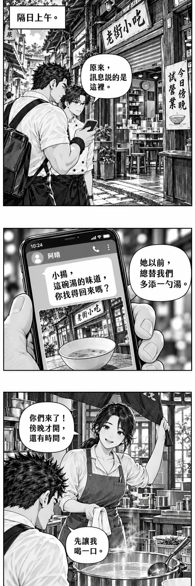
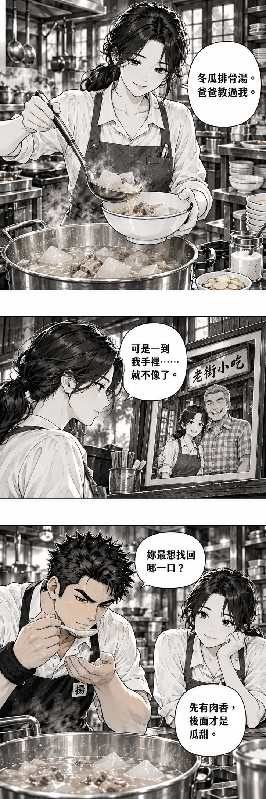
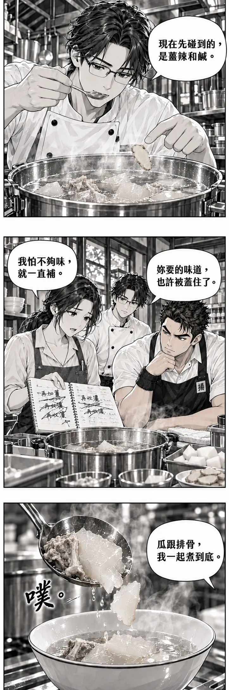
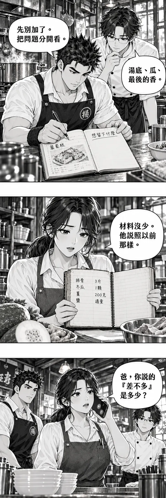
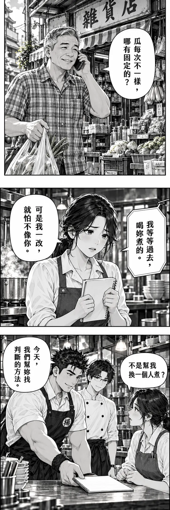
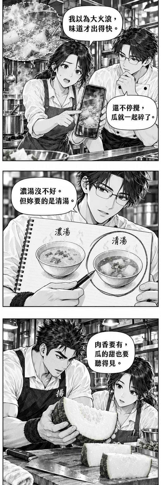
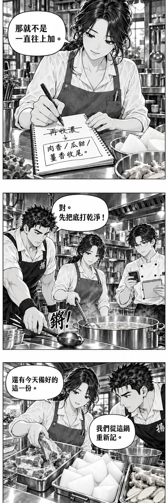
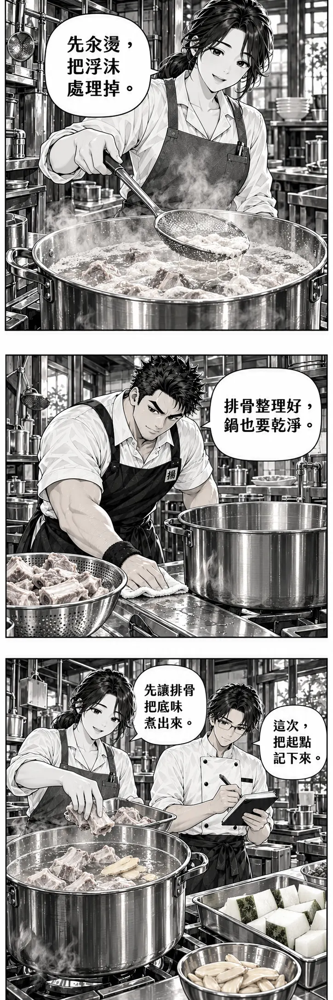
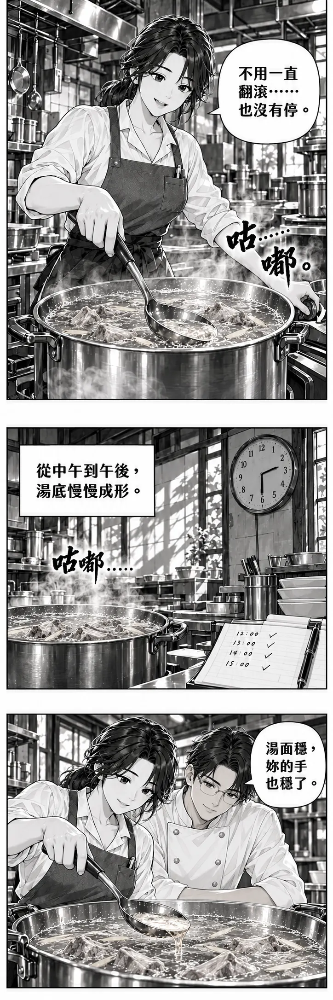
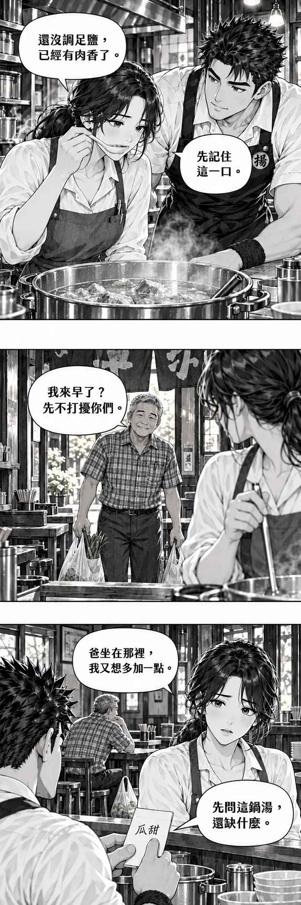
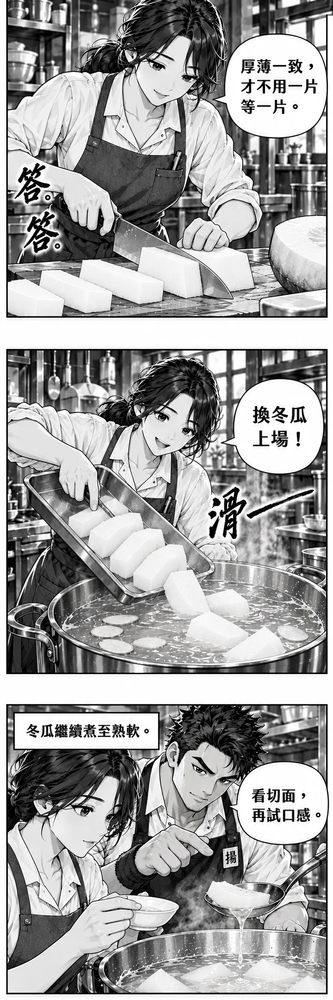
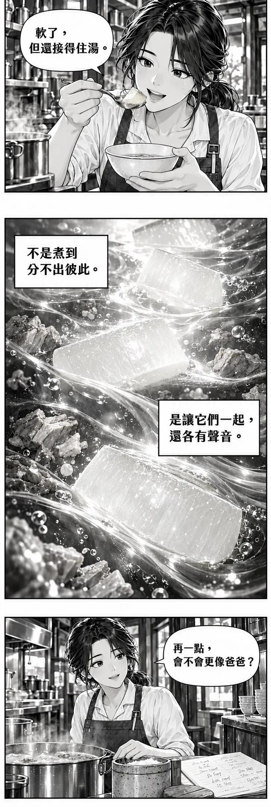
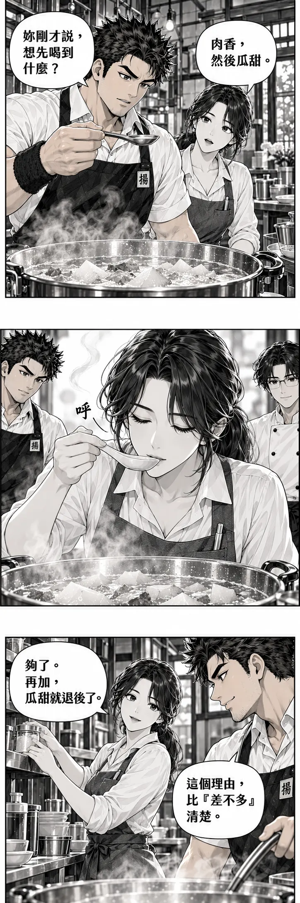
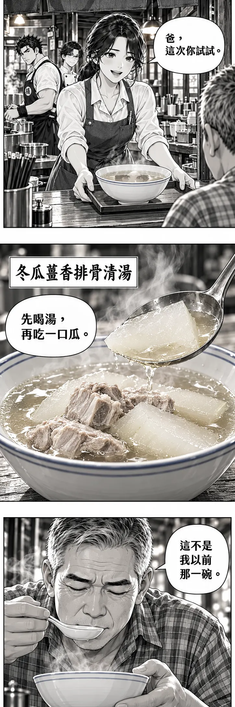
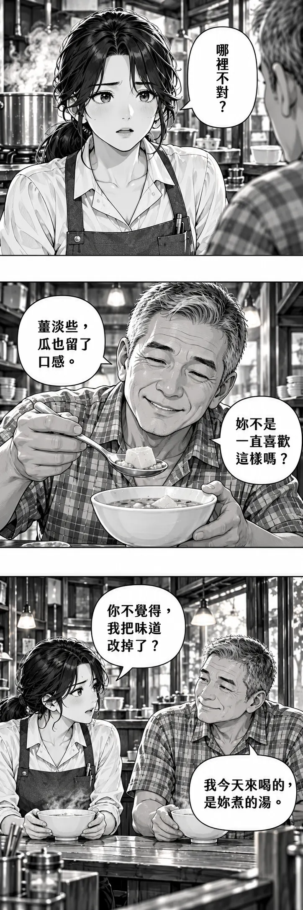
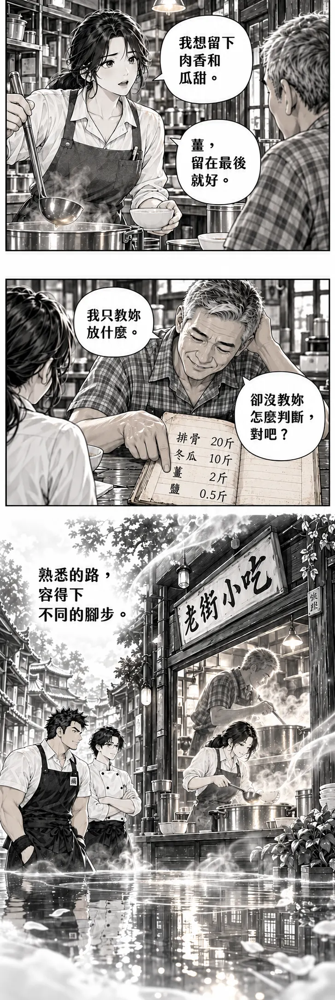
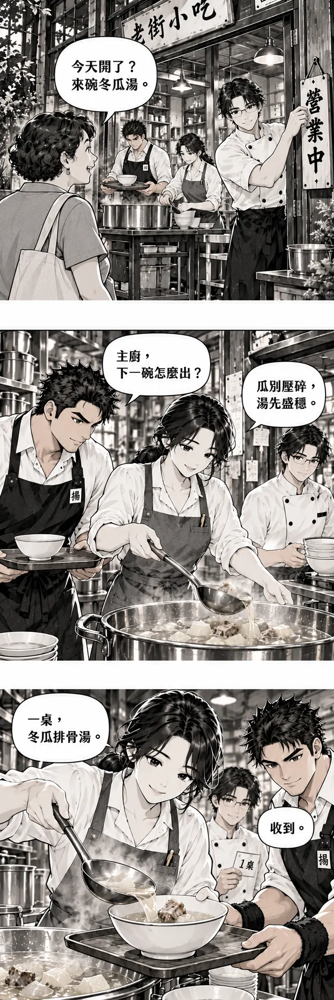
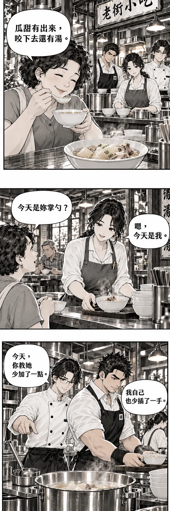
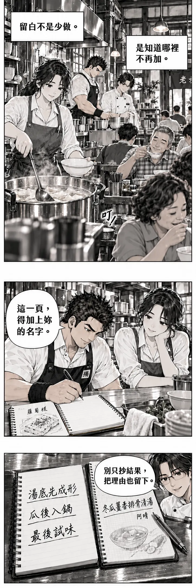
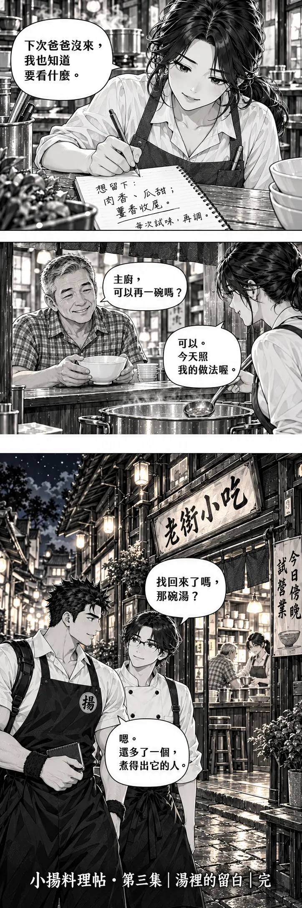
留白不是少做，
是知道哪裡不再加。
完整劇情與對白文字版 · 60 格
- 第 001 格 · 老街遠景
畫面：上午老街，騎樓下的小店半開鐵門。小揚與阿岳停在門前，店門貼「今日傍晚試營業」。小揚手中手機的照片正是眼前店面。
旁白：「隔日上午。」
阿岳：「原來，訊息說的是這裡。」 - 第 002 格 · 手機特寫
畫面：沿用第二集原創簡化訊息介面；聯絡人顯示「阿晴」，照片是藍線白碗與小店，不露個資。
訊息：「小揚，這碗湯的味道，你找得回來嗎？」
小揚畫外音：「她以前，總替我們多添一勺湯。」 - 第 003 格 · 門口中景
畫面：阿晴掀起門簾，手裡是乾淨抹布。店裡整齊但尚無客人，她笑一下，又看向鍋爐。
阿晴：「你們來了！傍晚才開，還有時間。」
小揚：「先讓我喝一口。」 - 第 004 格 · 湯碗俯視
畫面：阿晴從正妥善加熱的試作鍋盛出少量湯。湯色偏混濁，冬瓜邊角破碎；碗旁放著薑片碟和鹽罐，不出現神秘調味包。
阿晴：「冬瓜排骨湯。爸爸教過我。」 - 第 005 格 · 阿晴近景
畫面：阿晴看著牆上父女站在店門的舊照片；照片中的志伯健康帶笑，不用悼念式黑框。
阿晴：「可是一到我手裡……就不像了。」 - 第 006 格 · 試味近景
畫面：小揚用獨立試味匙吹涼一口，沒有誇張皺臉；阿晴在對面等答案。
小揚：「妳最想找回哪一口？」
阿晴：「先有肉香，後面才是瓜甜。」 - 第 007 格 · 阿岳近景
畫面：阿岳以自己的試味匙嚐湯，另一手指向完整薑片。背景浮出濃重的灰線，代表口中感受。
阿岳：「現在先碰到的，是薑辣和鹹。」 - 第 008 格 · 三人與工作檯
畫面：阿晴攤開今天的試作記錄，上面有反覆劃掉的「再加薑」「再收濃」。小揚沒有立刻伸手接管湯鍋。
阿晴：「我怕不夠味，就一直補。」
小揚：「妳要的味道，也許被蓋住了。」 - 第 009 格 · 湯勺特寫
畫面：湯勺中一片冬瓜軟爛斷開，邊緣落回碗裡。用短促音效，不畫腐敗或髒污。
音效：「噗。」
阿晴：「瓜跟排骨，我一起煮到底。」 - 第 010 格 · 小揚打開筆記
畫面：筆記翻過第二集蘿蔔糕那頁，停在空白頁。小揚先寫「想留下什麼」，沒先寫配方。
小揚：「先別加了。把問題分開看。」
阿岳：「湯底、瓜、最後的香。」 - 第 011 格 · 舊筆記特寫
畫面：阿晴取出店裡的食材記帳本，手寫「排骨／冬瓜／薑／鹽」，下方只記採買數量。它不是失傳食譜，也沒有缺頁。
阿晴：「材料沒少。他說照以前那樣。」 - 第 012 格 · 阿晴拿手機
畫面：阿晴撥父親電話，小揚與阿岳安靜站旁邊。畫面只用通話圖示，不畫號碼。
阿晴：「爸，你說的『差不多』是多少？」 - 第 013 格 · 志伯在雜貨店
畫面：志伯拎著家用採買袋，站在店外安靜接電話；這是真實同時發生的另一場景，不是回憶。
志伯：「瓜每次不一樣，哪有固定的？」 - 第 014 格 · 阿晴半身
畫面：阿晴捏緊記帳本一角，沒有摔東西。小揚看見她在意的是得到認可，而不只是一鍋湯。
阿晴：「可是我一改，就怕不像你。」
志伯電話音：「我等等過去，喝妳煮的。」 - 第 015 格 · 三人中景
畫面：掛斷電話後，小揚把自己原本伸向圍裙繫帶的手收回，轉而將空白記錄紙推給阿晴。
小揚：「今天，我們幫妳找判斷的方法。」
阿晴：「不是幫我換一個人煮？」 - 第 016 格 · 試作現場回述
畫面：阿晴指向爐邊今天的試作照片；同一格以虛線小意象呈現先前猛烈翻滾的湯面，不另切小格、不算即時操作。
阿晴：「我以為大火滾，味道才出得快。」
阿岳：「還不停攪，瓜就一起碎了。」 - 第 017 格 · 兩種湯的概念對照
畫面：筆記上畫一碗濃湯與一碗清湯，兩者下方都沒有叉號。阿岳用筆圈住清湯，表示本次選擇。
阿岳：「濃湯沒不好。但妳要的是清湯。」 - 第 018 格 · 冬瓜切面近景
畫面：小揚托住阿晴買好的冬瓜，讓她看白色果肉與厚皮；刀平放在砧板上。
小揚：「肉香要有，瓜的甜也要聽得見。」 - 第 019 格 · 阿晴改寫記錄
畫面：她劃掉紙上「再收濃」，改寫「肉香／瓜甜／薑香收尾」。這是本集目標，不是可通用的評分公式。
阿晴：「那就不是一直往上加。」 - 第 020 格 · 開工中景
畫面：阿晴站到主工作位；小揚把主湯勺放在她手邊，阿岳拿起計時器與記錄紙。三人目光集中。
小揚：「對。先把底打乾淨！」
音效：「鏘！」用器具放下的漫畫化聲音，不畫刀具互撞。 - 第 021 格 · 備料檯俯視
畫面：阿晴從冰箱取出當日預留的新鮮排骨；排骨、冬瓜與薑各自分區。前一鍋試作不混進新鍋，也不交給客人評審。
阿晴：「還有今天備好的這一份。」
小揚：「我們從這鍋重新記。」 - 第 022 格 · 汆燙鍋近景
畫面：排骨在汆燙鍋中加熱，浮沫聚起。阿晴站穩操作，沒有把臉湊向蒸氣。
阿晴：「先汆燙，把浮沫處理掉。」 - 第 023 格 · 清理與換鍋
畫面：以處理後的排骨與已清洗乾淨的正式湯鍋為主體；小揚正擦乾檯邊水滴，生熟工具明確分放。
小揚：「排骨整理好，鍋也要乾淨。」 - 第 024 格 · 重新入鍋近景
畫面：排骨、乾淨水與少量拍裂薑片入正式湯鍋；阿岳記下用量。冬瓜留在旁邊的備料區，尚未入鍋。
阿晴：「先讓排骨把底味煮出來。」
阿岳：「這次，把起點記下來。」 - 第 025 格 · 湯面動勢大格
畫面：湯煮開後，阿晴把火調至能保持輕微燉煮的程度。前景大泡轉為細小泡，背景速度線從尖銳變成圓弧。
阿晴：「不用一直翻滾……也沒有停。」
音效：「咕……嘟。」 - 第 026 格 · 時鐘與窗影
畫面：單一完整畫面，牆鐘與窗影顯示已到午後；湯鍋仍在受看顧地燉煮，記錄紙多了幾次觀察記號。
旁白：「從中午到午後，湯底慢慢成形。」
音效：「咕嘟……」 - 第 027 格 · 掠去浮油特寫
畫面：阿晴用湯勺輕掠表面多餘浮油，不在鍋中用力攪拌。阿岳看著湯面，手不伸去搶勺。
阿岳：「湯面穩，妳的手也穩了。」 - 第 028 格 · 小揚與阿晴試味
畫面：阿晴以乾淨試味匙取樣，排骨已經充分烹煮至適當熟度與柔嫩度。小揚把鹽罐留在原處，不急著替她調味。
阿晴：「還沒調足鹽，已經有肉香了。」
小揚：「先記住這一口。」 - 第 029 格 · 門簾中景
畫面：志伯提採買袋走進店，桌上尚無正式出餐。阿晴看見父親，下意識把湯勺握緊。
志伯：「我來早了？先不打擾你們。」 - 第 030 格 · 客席與廚房對望
畫面：志伯坐在客席，採買袋放腳邊；阿晴在出餐口內望著他。小揚輕敲她剛才寫的「瓜甜」。
阿晴：「爸坐在那裡，我又想多加一點。」
小揚：「先問這鍋湯，還缺什麼。」 - 第 031 格 · 切瓜手部近景
畫面：阿晴去除冬瓜硬皮與籽瓤，切成厚薄相近的片；安全刀工、指節收好。厚度依本次試作，不標萬用數值。
阿晴：「厚薄一致，才不用一片等一片。」
音效：「答、答。」 - 第 032 格 · 瓜片入鍋斜角
畫面：阿晴用容器靠近湯面，平穩放下冬瓜，不從高處撒入滾湯。薑片已在湯中，不突然增加新材料。
阿晴：「換冬瓜上場！」
音效：「滑——」 - 第 033 格 · 觀察熟度近景
畫面：經過後續燉煮，瓜片邊緣透亮、中央逐漸轉透；小揚提醒阿晴取一片檢查，不以顏色作唯一熟度判斷。
旁白：「冬瓜繼續煮至熟軟。」
小揚：「看切面，再試口感。」 - 第 034 格 · 湯匙托瓜極近景
畫面：阿晴用乾淨小匙切開取出的瓜片，熟軟卻保有輪廓。她吹涼後試吃，眼神明亮。
阿晴：「軟了，但還接得住湯。」 - 第 035 格 · 主觀料理意象
畫面：冬瓜厚片像半透明的小舟，沿畫面由上向下穿過穩定水流；肉香以深灰流線在下，瓜的透光在上。沒有真的船落入鍋，也不用巨龍。
阿晴內心：「不是煮到分不出彼此。」
阿晴內心：「是讓它們一起，還各有聲音。」 - 第 036 格 · 鹽罐與記錄紙
畫面：阿晴少量調味後試嚐，記錄紙上已有調整記號。她看向小揚，手還停在鹽罐旁。
阿晴：「再一點，會不會更像爸爸？」 - 第 037 格 · 小揚近景
畫面：小揚本能地伸出試味匙，隨即停住。他已經嚐過，但不直接宣布標準答案。
小揚：「妳剛才說，想先喝到什麼？」
阿晴：「肉香，然後瓜甜。」 - 第 038 格 · 阿晴獨立試味大格
畫面：阿晴再取一口，背景只留白與三道極細氣味線。小揚和阿岳退至畫面邊緣，不占主視覺。
無對白。
音效：小小「呼」。
美術註：這一格安靜，但不是空白；嘴角、手與湯面都要畫清楚。 - 第 039 格 · 把鹽罐推回
畫面：阿晴把鹽罐放回調味架，沒有灑出戲劇性鹽雨。小揚露出肯定表情。
阿晴：「夠了。再加，瓜甜就退後了。」
小揚：「這個理由，比『差不多』清楚。」 - 第 040 格 · 阿晴端碗至出餐口
畫面：她將一碗成品穩穩放在托盤上，由出餐口遞出；不是端著滿鍋湯走動。遠景志伯抬頭。
阿晴：「爸，這次你試試。」 - 第 041 格 · 成品英雄特寫
畫面：藍線白碗，清亮而帶油光的湯、熟軟排骨、透亮冬瓜厚片。湯勺托起一片冬瓜，碗底輪廓隱約可見；不以玻璃般透明代表唯一好湯。
菜名字幕：「冬瓜薑香排骨清湯」。
阿晴畫外音：「先喝湯，再吃一口瓜。」 - 第 042 格 · 志伯試湯近景
畫面：志伯吹涼後啜飲，停了一拍；手握匙柄的方式與阿晴相似。
志伯：「這不是我以前那一碗。」 - 第 043 格 · 阿晴反應近景
畫面：阿晴肩膀微僵，沒有崩潰落淚；小揚不替她辯解，讓她先開口。
阿晴：「哪裡不對？」 - 第 044 格 · 瓜片與父親笑容
畫面：志伯吃下一小口冬瓜，匙上剩餘瓜片保持完整。他笑起來，不作評審姿態。
志伯：「薑淡些，瓜也留了口感。」
志伯：「妳不是一直喜歡這樣嗎？」 - 第 045 格 · 父女雙人中景
畫面：阿晴想起自己開場提出的目標，抬頭看父親。志伯把碗放回桌面，不伸手指揮廚房。
阿晴：「你不覺得，我把味道改掉了？」
志伯：「我今天來喝的，是妳煮的湯。」 - 第 046 格 · 阿晴回答
畫面：阿晴站直，不再把記錄紙藏在身後；她和父親隔桌平視。
阿晴：「我想留下肉香和瓜甜。」
阿晴：「薑，留在最後就好。」 - 第 047 格 · 志伯指向舊記帳本
畫面：父親翻到只有食材採買量的那頁，自己也有點不好意思。桌上沒有祖傳印章或獎盃。
志伯：「我只教妳放什麼。」
志伯：「卻沒教妳怎麼判斷，對吧？」 - 第 048 格 · 無框主觀味覺意象
畫面：一條老街沿畫面縱深延伸，倒映在清湯般的水面；同一扇店門仍在，門內從父親掌勺的剪影漸變成阿晴。小揚與阿岳站在門旁，不占據掌勺位置。意象用柔白邊，不誤畫成時空穿越。
旁白：「熟悉的路，容得下不同的腳步。」 - 第 049 格 · 試營業門口
畫面：傍晚，阿岳將門口牌翻成「營業中」。室內的湯仍妥善熱存，三人準備分批供餐。熟客提購物袋走近。
熟客：「今天開了？來碗冬瓜湯。」 - 第 050 格 · 阿晴與小揚
畫面：阿晴轉回工作位，小揚讓開主湯勺的位置，改拿托盤；阿岳站到出餐口外側協助。
小揚：「主廚，下一碗怎麼出？」
阿晴：「瓜別壓碎，湯先盛穩。」 - 第 051 格 · 出餐手部近景
畫面：阿晴穩穩托起冬瓜與排骨，沿碗邊注入湯；小揚接盤，阿岳確認桌號。各人的動作有清楚先後，不在客人頭上傳湯。
阿晴：「一桌，冬瓜排骨湯。」
小揚：「收到。」 - 第 052 格 · 熟客試吃
畫面：熟客先喝湯，再咬冬瓜。衣著完整，沒有飛天；只用眼神和肩膀放鬆表現滿足。
熟客：「瓜甜有出來，咬下去還有湯。」 - 第 053 格 · 熟客與阿晴
畫面：阿晴在出餐口外聽見評語；志伯坐在另一桌，不插話替女兒邀功。
熟客：「今天是妳掌勺？」
阿晴：「嗯，今天是我。」 - 第 054 格 · 小揚與阿岳側景
畫面：小揚看著阿晴繼續出餐；阿岳指了指自己一直沒接管的主湯勺，輕笑。
阿岳：「今天，你教她少加了一點。」
小揚：「我自己也少插了一手。」 - 第 055 格 · 營業中的小店縱深大格
畫面：兩三桌成年客人吃晚飯，阿晴在爐邊、兩位搭檔協助，志伯悠閒喝湯；是正常小店規模，不突然排到整條街。
小揚內心：「留白不是少做。」
小揚內心：「是知道哪裡不再加。」
音效：碗匙輕碰「叮」。 - 第 056 格 · 晚餐後工作檯
畫面：第一輪客人用完餐，三人短暫整理出餐區。小揚在自己的筆記本新頁寫下菜名，前一頁蘿蔔糕頁角露出。
小揚：「這一頁，得加上妳的名字。」 - 第 057 格 · 兩本記錄並排
畫面：左邊是小揚的筆記本，右邊是阿晴的工作記錄本；不是把蘭姐送的小本子轉送。兩人各自留下今天的觀察。
筆記可讀字：「湯底先成形／瓜後入鍋／最後試味」。
阿岳：「別只抄結果，把理由也留下。」 - 第 058 格 · 阿晴落筆特寫
畫面：阿晴在自己本子寫「想留下：肉香、瓜甜；薑香收尾」，旁邊註「每次試味，再調」。鉛筆是開頭別在圍裙上的同一支。
阿晴：「下次爸爸沒來，我也知道要看什麼。」 - 第 059 格 · 父女小笑點
畫面：志伯端著已喝完的碗來到出餐口外，阿晴拿湯勺等他說話。他沒有偷偷走進廚房改味道。
志伯：「主廚，可以再一碗嗎？」
阿晴：「可以。今天照我的做法喔。」 - 第 060 格 · 門外寬幅結尾
畫面：直幅夜色老街，上方是舊招牌，中段是透光店門，下方近景的小揚與阿岳站在門外道別。透過門簾可見阿晴替父親添湯；同一塊招牌下，工作的身影換了人。前景小揚合上筆記，沒有獎章、購物連結或宣傳 QR code。
阿岳：「找回來了嗎，那碗湯？」
小揚：「嗯。還多了一個，煮得出它的人。」
落款：「小揚料理帖・第三集｜湯裡的留白｜完」。
關於這一集
原創台灣料理漫畫，人物、店家與情節均為虛構。畫面由 AI 生成，以墨線、網點與灰階呈現；角色與器物細節可能有藝術化差異。故事不是完整食譜或食安操作手冊。
圖像採高壓縮 WebP，依螢幕選用合適尺寸，後段圖片隨閱讀載入。本站不使用追蹤器、廣告或外部字型。
第三集分鏡 Markdown ↗ · GitHub ↗